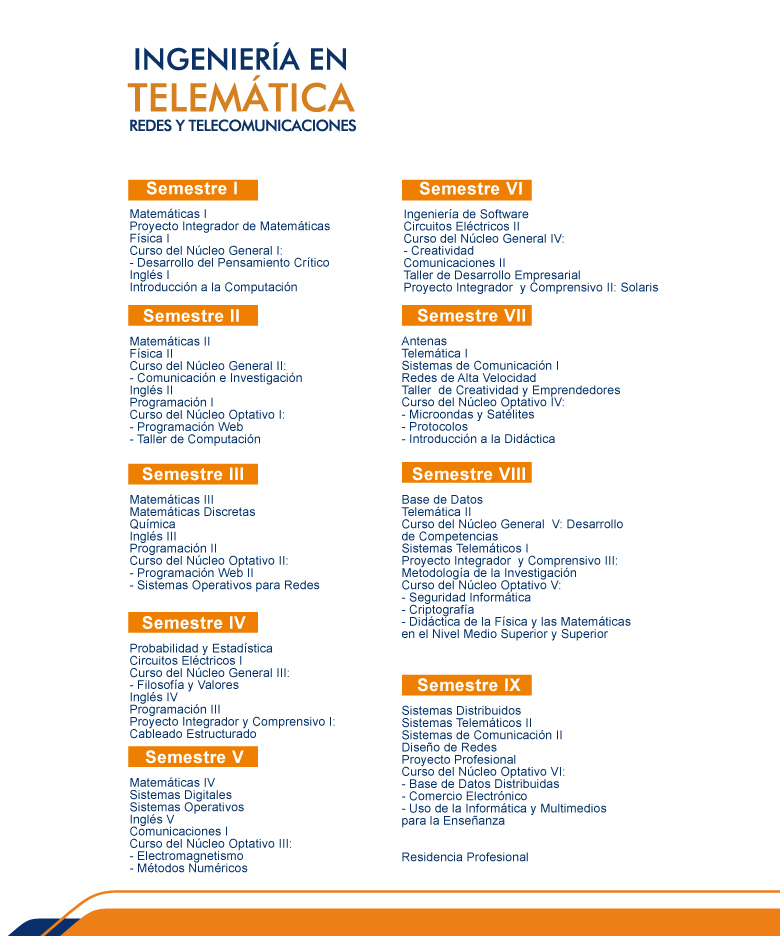

Ingeniería en Telemática (ITEM)
Nivel: Licenciatura
Título otorgado: Ingeniería en Telemática
Duración: 9 Semestres
Descripción carrera:
En la carrera de Ingeniería en Telemática, se prepara a los estudiantes en tres grandes áreas del conocimiento que conforman la carrera y las cuales son:
-
Las redes de telecomunicaciones, en dicha área del conocimiento se incluyen los temas que tienen que ver con los sistemas de telecomunicaciones de la actualidad, como lo son las redes de área local, las redes de cobertura amplia, las redes convergentes de voz, datos y video, las redes de telefonía celular, los sistemas de microondas terrestres y vía satélite, así como los estándares para instalar la infraestructura de cableado estructurado.
-
Las tecnologías de la información, que es el conjunto de aplicaciones basadas en software y equipos informáticos que hacen uso de las redes de telecomunicaciones para la transmisión y ejecución de las mismas; entre un sinnúmero de aplicaciones encontramos: la programación web, el diseño de bases de datos y de conocimientos, aplicaciones de voz y video, programación para dispositivos móviles y para el posicionamiento de vehículos.
-
Los sistemas embebidos, es un área del conocimiento en constante desarrollo industrial y se refiere a sistemas electrónicos que incluyen una micro-computadora, entradas y salidas estándares, conectividad y software. Esta micro-computadora puede adaptarse a casi cualquier tipo de aplicación, siendo su principal ventaja la movilidad y la conectividad; haciendo realidad el concepto de internet de las cosas. Los sistemas embebidos pueden obtener, procesar, transmitir y recibir información de diferentes fuentes incluyendo sensores y dispositivos típicos de entrada/salida. Las aplicaciones en este sector son ilimitadas, por ejemplo, el sector automotriz, los servicios de salud, la automatización de líneas de producción, diversión, comercio, ciudades inteligentes y educación.
Un ingeniero en telemática dispone de un conjunto de habilidades y capacidades para poder gestionar y dirigir proyectos en las áreas del conocimiento que comprenden la carrera, principalmente en los sectores de las telecomunicaciones y de las tecnologías de la información. Los estudiantes de Ingeniería en telemática tienen la oportunidad de complementar las actividades de sus clases cotidianas al hacer uso de laboratorios especializados en las áreas de telecomunicaciones, cableado estructurado, seguridad informática, robótica y el desarrollo de software especializado. Los estudiantes de la carrera de Ingeniería en Telemática tienen la posibilidad de participar en una gran cantidad de actividades del tipo académicas, como lo son las visitas a empresas del sector, en proyectos de investigación aplicada, asistencia a congresos y los intercambios estudiantiles con otras universidades nacionales e internacionales.
Misión del Programa Educativo
“El Programa Educativo de la carrera de Ingeniería en Telemática está comprometido con la excelencia en la formación integral y humana, y con el aprendizaje, el desarrollo y aplicación del conocimiento en los campos de las telecomunicaciones y la informática. Esta comprometido con la sociedad para mantener una oferta educativa pertinente en el área y desarrollar investigación aplicada involucrando alumnos en la solución de problemas de la sociedad. “ProPE 2016-2017
Visión del Programa Educativo
La UPSLP y su programa educativo de Ingeniería en Telemática entregan a la sociedad alumnos formados con los más altos estándares profesionales.
- Egresados que tienen en su haber competencias pertinentes a las necesidades de su entorno, y son reconocidos en el ámbito laboral por su alto desempeño y calidad personal;
- Un porcentaje significativo de ellos realiza estudios de posgrado en el país o en el extranjero.
- Contarán con certificaciones de importancia en el área, actuales y con reconocimiento internacional.
- Estarán certificados en el dominio del idioma inglés por el British Council.
- Tendrán experiencia práctica adquirida en los laboratorios, en el estudio de casos y en su estancia profesional y,
- Serán hábiles en el manejo de las nuevas tecnologías y reconocerán el proceso de aprendizaje como una necesidad permanente.
- Los egresados tendrán una estrecha relación con la Universidad a través de cursos, diplomados, especialidades y posgrado.
El PE de Ingeniería en Telemática tendrá una planta académica consolidada basada en los más altos estándares.
- El 78% de los PTC tendrán el reconocimiento al Perfil PROMEP, el 89% serán doctores y el 44% de ellos pertenecerá al SNI.
- Mantendrán una metodología de trabajo colegiado y participarán activamente en cuerpos académicos que participan en redes de investigación nacionales e internacionales.
- Los proyectos serán financiados por Instituciones públicas y privadas, permitiendo obtener recursos adicionales.
- El PE estará evaluado por CIEES.
Plan de estudios
Consulta Plan de Estudios
-

Infraestructura / Recursos
Los estudiantes de la carrera de Ingeniería en Telemática cuentan con acceso a la siguiente infraestructura:
- Edificio del Centro de Nuevas Tecnologías
- Laboratorio de Redes (CCNA-Cisco)
- Laboratorio de Telecomunicaciones
- Laboratorio de Tecnologías SUN
- Centro de Software Libre
- Laboratorio de Cableado Estructurado (Panduit)
- Laboratorio de Arquitectura de Computadoras
- Laboratorios especializados en:
- Ingeniería de Software
- Seguridad Informática
- Comercio Electrónico
- Procesamiento Digital
Certificaciones:
Logros / Distinciones:
- Encuentro de jóvenes investigadores del Estado de San Luis Potosí.
- Encuentro nacional de jóvenes investigadores de México.
- Premio al reto nacional de la Agencia Espacial Mexicana.
- Premio a la investigación Antonio Villaseñor.
- Encuentro internacional para sistemas de comunicaciones inalámbricas en los países de Perú, Argentina, Venezuela y México.
- Encuentro de jóvenes universitarios en Cisco Day.
- Premio en evento Cisco Netriders.
- Congreso Internacional de Telemática en la Universidad Autónoma de Colima.
- Becas a la excelencia académica.
- Premio a la trayectoria académica.
Docentes:
Dr. Juan Antonio Cabrera Rico
Perfil de egreso:
El Ingeniero en Telemática combina los conocimientos y habilidades adquiridos en los campos de las telecomunicaciones y la informática, para analizar, diseñar, desarrollar e implantar soluciones que permitan la transmisión, procesamiento, almacenamiento y utilización de la información que se maneja en la operación y administración económica y eficiente de redes telemáticas, así como en su mantenimiento y en actualización de la tecnología existente.
Campo de trabajo:
Los egresados de la carrera de Ingeniería en Telemática tienen la oportunidad de integrarse a múltiples sectores productivos como lo son:
- La industria de las telecomunicaciones
- La industria de las tecnologías de la información
- La industria de la electrónica
- Empresas de cualquier sector que demanden o requieran la gestión de infraestructura de telecomunicaciones y de redes, así como la gestión de servicios de las tecnologías de la información.
- Instituciones públicas
Ligas de Interés
- http://ww.ieee.org
- http://www.itu.int
- http://www.ift.org.mx
- http://www.canieti.org
- Academia CISCO: http://netacad.com
- Academia ORACLE: http://academy.oracle.com
- ¿Por qué estudiar carreras relacionadas con las TIC?
- Déficit de ingenieros en el área
Contacto:
Coordinación de Ingeniería en Telemática – Redes y Telecomunicaciones
Karina Hernández Leyva
Asistente de Ingeniería en Telemática (ITEM)
Teléfono: (444) 870 – 21 – 00 Ext. 223
Dr. Juan Antonio Cabrera